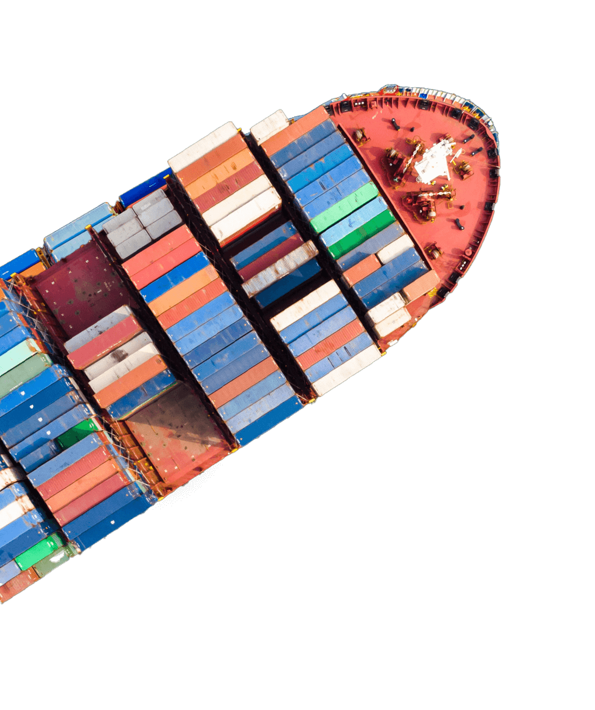
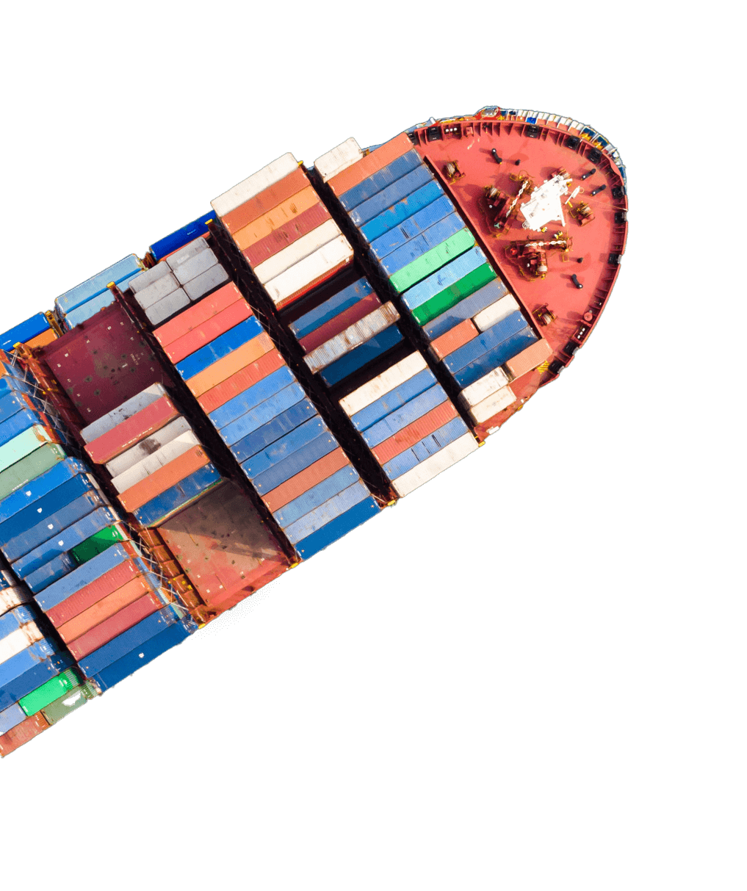

Registro no MAPA
Toda empresa que realiza operações de importações e exportações a fim de comercializar produtos deve seguir procedimentos que atestem o processo de produção conforme a legislação.
Para empresas que pretendem realizar operações internacionalmente, é fundamental compreender a importância de realizar o Registro no MAPA (Ministério da Agricultura, Pecuária e Abastecimento).
Fundada em 2002, a Saygo é especializada na inclusão de novas empresas no comércio internacional, fazendo a gestão de toda a cadeia de importação e exportação, oferecendo redução de custos nas operações e consequente aumento do lucro dos clientes.
 

O que é
“registro no MAPA”?
O registro no MAPA é de suma importância para regularizar os produtos e/ou mercadorias. Executado pelo Ministério da Agricultura, o processo legaliza o produto antes mesmo de ser comercializado. O MAPA, por sua vez, é responsável pela gestão das políticas públicas de estímulo à agropecuária, pelo fomento do agronegócio e pela regulação e normatização de serviços vinculados ao setor.
O MAPA atua apenas com a responsabilidade da fiscalização e controle do trânsito internacional de produtos e insumos agropecuários em portos, aeroportos, postos de fronteira e aduanas especiais, com vistas a coibir o ingresso de pragas e enfermidades que possam representar ameaça à sanidade dos vegetais e rebanhos nacionais.
Como o MAPA atua na importação?
O MAPA atua apenas com a responsabilidade da fiscalização e controle do trânsito internacional de produtos e insumos agropecuários em portos, aeroportos, postos de fronteira e aduanas especiais, com vistas a coibir o ingresso de pragas e enfermidades que possam representar ameaça à sanidade dos vegetais e rebanhos nacionais.
Nesse sentido, o Ministério da Agricultura fica responsável por cuidar da regulamentação dos produtos agrícolas in natura. São os produtos de origem animal: ovos, carne, leite, além do azeite, bebidas alcoólicas e não alcoólicas, como vinhos, sucos, refrigerantes, entre outros.
preciso de uma assessoria de comexQuais são os produtos controlados pelo MAPA?
O registro no MAPA de produtos que devem passar pela processo de controle são os seguintes:
Animais, seus produtos, derivados, partes e subprodutos;
Vegetais, seus produtos, derivados, partes e subprodutos;
Agrotóxicos e fertilizantes;
Outros insumos agropecuários;
Vinhos e bebidas.
O objetivo do registro no MAPA, além de legalizar a comercialização do produto, é promover a segurança alimentar. Desse modo, o produto vinculado às atividades agropecuária ou de origem animal precisa obter o registro antes de ser comercializado.
Como é o processo de registro no MAPA?
Antes de vender produtos que estejam relacionados ao agronegócio, vinhos, bebidas e outros produtos, a empresa deve realizar o Registro de Estabelecimento junto ao MAPA. Além disso, é preciso obter o Alvará de Funcionamento para exercer suas atividades.
Com o Alvará de Funcionamento, ou seja, com a autorização do Poder Público Municipal para realizar operações e o cadastramento da empresa como importadora para anuência de produtos, é efetuado o registro do estabelecimento e produto junto ao MAPA. Isso inclui a produção, armazenagem, distribuição, importação e exportação.
A Saygo posiciona a sua empresa no Comércio Exterior, visando a competitividade e segurança das operações ao realizar os serviços de Registro do MAPA de acordo com o produto importado, tais como: SIF – Origem Animal e CGC – ‘Produto de Cesta Básica’.
O serviço de Registro de Produtos ligados ao Ministério da Agricultura, Pecuária e Abastecimento garante a legalização dos produtos de origem animal e insumos agropecuários, com a finalidade de ficar em conformidade com os padrões estabelecidos para serem exportados.
preciso de uma assessoria de comex